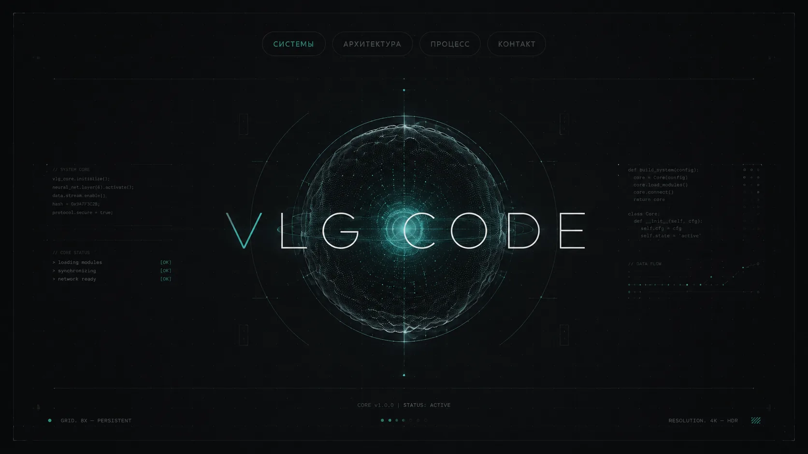
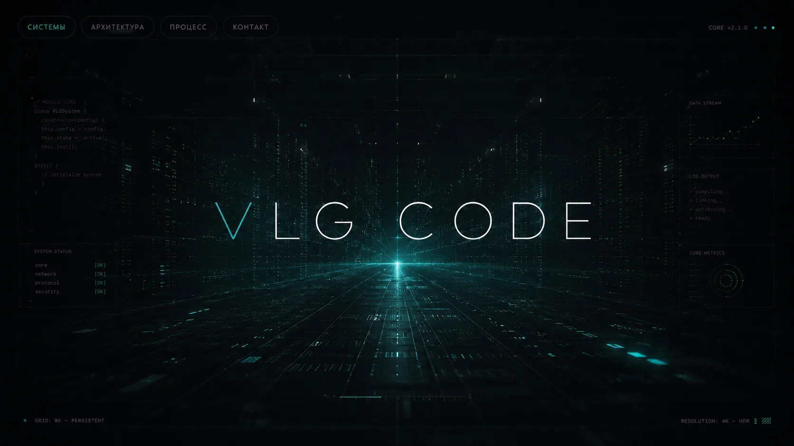
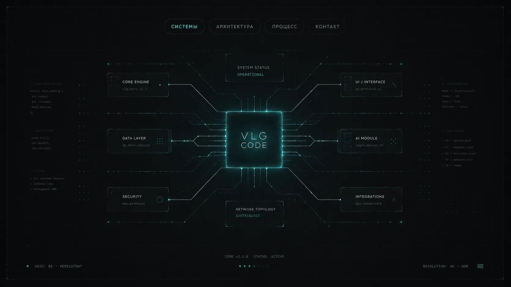
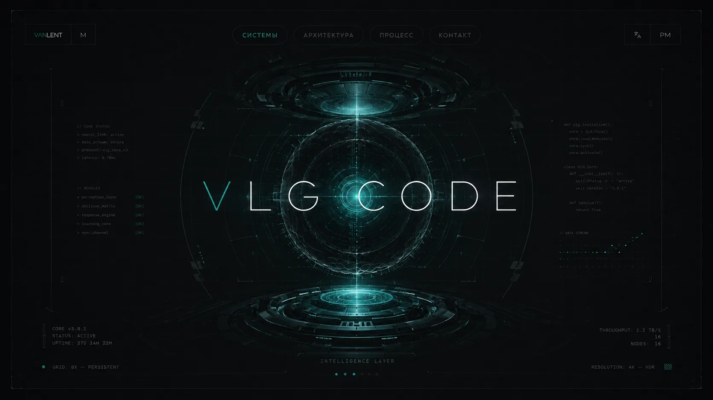

Инфраструктура.
Не набор инструментов. Цельная цифровая среда.
Технология должна сокращать ручную работу, соединять данные и помогать принимать решения. Поэтому проектируется не просто красивый экран, а рабочая система с понятной логикой, доступом к данным и конкретным результатом для бизнеса или продукта.
От запроса — к работающему контуру.
Сначала определяется полезный сценарий: где возникает ценность, какие данные участвуют, кто взаимодействует с системой и какой выход должен быть на выходе. Только после этого строится интерфейс, сервисный слой и маршрут автоматизации.
Понятный маршрут. Без чёрного ящика.
Объём, сроки и стоимость определяются после разбора задачи. Каждый этап имеет проверяемый результат: сначала диагностика, затем архитектура, затем сборка и запуск. Это помогает не терять время и не раздувать ненужный функционал.
Визуальные кейсы VLG Code.
Подборка концептов и интерфейсных экранов системы: ядро, архитектура, модули и рабочие контуры. Каждое изображение — отдельный слой визуального языка проекта.

Сфера-ядро с HUD-оболочкой и панелями статуса.

Дата-центр и модульный контур в перспективе.

Схема связей ядра, данных, ИИ и безопасности.

Экран системы с потоками данных и метриками.
Давайте соберём вашу систему.
Опишите задачу простыми словами. На первом контакте можно быстро определить, какой формат решения подойдёт, какие данные понадобятся и каким может быть рабочий контур. Для связи на сайте оставлена только электронная почта.